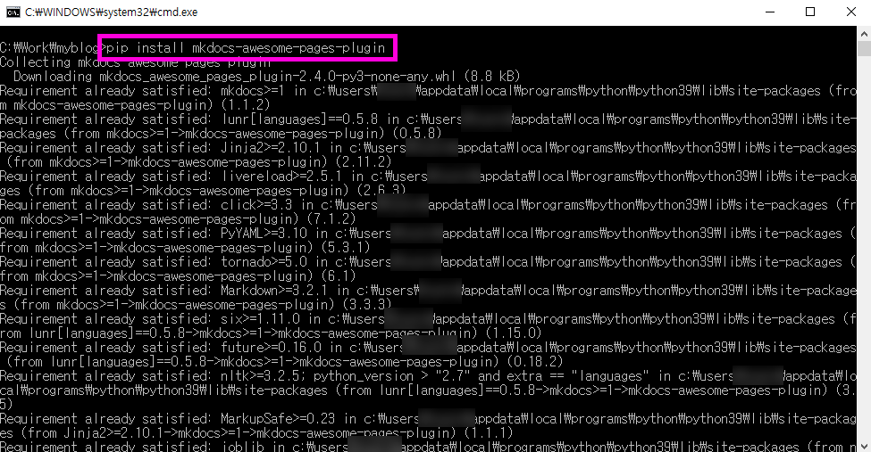
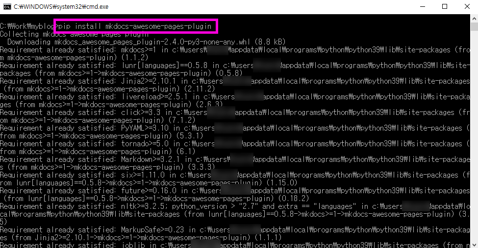

mkdocs 설치 (윈도 10)
설치 전체과정 요약
-
Python 다운로드
-
Python 설치
2-1. Add Python 3.9 to PATH 옵션 선택
2-2. Disable path length limit 선택
-
mkdocs 설치
3-1. pip install mkdocs-material
3-2. python.exe -m pip install –upgrade pip
3-3. pip install mkdocs-awesome-pages-plugin
3-4. mkdocs new {폴더명}
3-5. cd blog-mkdocs 이동 후 mkdocs serve
Python 다운로드
mkdocs를 사용하려면 먼저 Python을 설치해야 합니다.
https://www.python.org/downloads/
2020-11-27일 현재 최신버전은 3.9.0입니다.
Python 설치하기
PATH 추가
Python 설치 시작화면에 PATH에 python을 추가하는 옵션이 있습니다.
“Add Python 3.9 to PATH” 옵션을 선택하고 설치를 시작하면 됩니다.
PATH 문자 길이 제한 해제
윈도에는 기본설정에 파일경로가 최대 260자로 제한되어 있는데, 이 제한을 풀것인지 확인하는 과정입니다.
“Disable path length limit” 옵션이 나오는데, 특별한 문제가 없다면 해제하고 가면 됩니다.
mkdocs 설치
mkdocs 설치하는 방법이 여러가지 있지만 가장 많이 사용되는 테마인 material 테마를 적용한 상태로 설치합니다.
pip install mkdocs-material
pip 업그레이드
mkdocs를 설치하고 나면 pip 업그레이드에 대한 안내가 나옵니다.
WARNING: You are using pip version 20.2.3; however, version 20.2.4 is available.
You should consider upgrading via the 'c:\users\{***}\appdata\local\programs\python\python39\python.exe -m pip install --upgrade pip' command.
python.exe -m pip install --upgrade pip
awesome-pages-plugin 설치
문서 구조나 네비게이션을 좀 더 쉽게 표현하고 구성하게 해주는 플러그인입니다. 기본적으로 설치해두는 것이 여러모로 편리합니다.
pip install mkdocs-awesome-pages-plugin
블로그 문서 생성
이제 기본으로 필요한 것들은 다 설치했으니 블로그를 만들어봅시다. mkdocs new {폴더명}
mkdocs new blog-mkdocs
블로그 실행
이제 웹브라우져에서 블로그를 확인해봅시다. 위에서 만들어진 폴더로 이동합니다.
cd blog-mkdocs
mkdocs serve
그러면 http://127.0.0.1:8000 주소로 접속하면 기본 블로그를 확인해볼 수 있고 mkdocs serve 명령으로 문서 변경을 실시간으로 감지해서 문서를 수정하면 브라우져에 바로바로 반영됩니다.
블로그 배포문서 생성
이제 만들어진 블로그 문서를 github 등이나 기타 서버로 배포하려면 다음과 같은 명령어를 입력하면 됩니다.
mkdocs build
설치과정 스크린샷 모음


 



문서 최종 수정일 : 2020-11-30